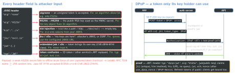

security · folio
In one line: Every classic JWT break is the verifier trusting the token to describe how to verify itself:
the header’s alg, kid, jku, jwk are attacker input. Fix: the server decides algorithm,
key and token type (RFC 8725). A signed bearer token is still stealable — DPoP (RFC 9449) binds it to a
key the client holds, and the OAuth Security BCP (RFC 9700, Jan 2025) requires public clients’ refresh
tokens to be sender-constrained or rotated.
Download PDF Print view LaTeX source


Validation that cannot be steered (RFC 8725)
- Algorithm from config, not from the token (§3.1): the key object carries its one algorithm; asymmetric keys can’t be used as HMAC secrets.
- Keys from your trust anchor: JWKS from the issuer’s configured URL, cached;
kidonly selects. Ignorejku,x5u,jwk,x5cunless pinned to an allow-list. - Explicit typing (§3.11):
typ: at+jwt(RFC 9068) for access tokens,dpop+jwtfor proofs; mutually exclusive rules per token kind (§3.12) stop cross-JWT confusion. - Claims:
issexact,aud= me,exp/nbfwith small leeway,subformat;critheader you don’t understand ⇒ reject. - Received claims are input (§3.10):
kid,sub,emailinto SQL, paths, LDAP, logs = injection.
JWS vs JWE
JWS (RFC 7515, 3 parts): integrity + origin, payload readable. JWE (RFC 7516, 5 parts: header . encrypted key . IV . ciphertext . tag): confidentiality; alg wraps a CEK (RSA-OAEP, ECDH-ES, dir), enc seals (A256GCM). Avoid RSA1_5 (Bleichenbacher oracle); validate ECDH-ES points (invalid-curve attack). Need both? sign, then encrypt (nested JWT, cty:"JWT"). A JWE made with the server’s public key proves nothing about who made it.
Example — a verifier the token cannot steer (jose, Node)
const JWKS = createRemoteJWKSet(
new URL('https://auth.example.com/.well-known/jwks.json'))
const { payload } = await jwtVerify(token, JWKS, {
algorithms: ['ES256'], // allow-list: none / HS256 fail
issuer: 'https://auth.example.com',
audience: 'https://api.example.com',
typ: 'at+jwt', // explicit typing, RFC 9068
clockTolerance: 30, // seconds of skew
maxTokenAge: '15m', // iat bound, even if exp is far
})Test your own API — each must be refused
alg none/None · RS→HS with the public key · kid path/SQL · jku to your host · embedded jwk · signature stripped · expired / future nbf · ID token or other aud · refresh token reused after logout.
RFC 9700 — the rules
| PKCE | public clients MUST; AS MUST reject a code_verifier with no challenge (downgrade) |
| implicit / ROPC | implicit SHOULD NOT; password grant MUST NOT |
| redirect URI | exact string match (except localhost port) |
| refresh tokens, public client | MUST be sender-constrained (DPoP / mTLS) or rotated |
| access tokens | SHOULD be sender-constrained; least privilege, audience-restricted |
Rotation detects theft after both parties use the RT (reuse → revoke family); sender-constraining makes a stolen RT unusable without the private key.
Tokens on the phone
iOS: Keychain, ThisDeviceOnly; DPoP key in the Secure Enclave (SecureEnclave.P256.Signing) — signs, never exported, so a backup/jailbreak dump does not carry it. Android: Android Keystore. RN: react-native-keychain / expo-secure-store — never AsyncStorage (plain file). Access token in memory; log out = revoke RT + wipe + drop key.
Traps
- “We verify the signature” — with which algorithm and key? If the token chose either, it’s forgeable.
decode()vsverify(): reading claims without verifying is an auth bypass.- HS256 shared across services: every service can mint tokens for all the others.
- JWE is not authentication — anyone with your public key can encrypt to you.
- DPoP without
jti/iatchecks: a proof can be replayed within its window; use nonces. - Blocking
alg:noneby string compare:"None"slips through(unverified)— allow-list instead.
Remember
“The server picks alg, key and type; the token only picks which of my keys (kid). Bind what you can’t keep secret.”